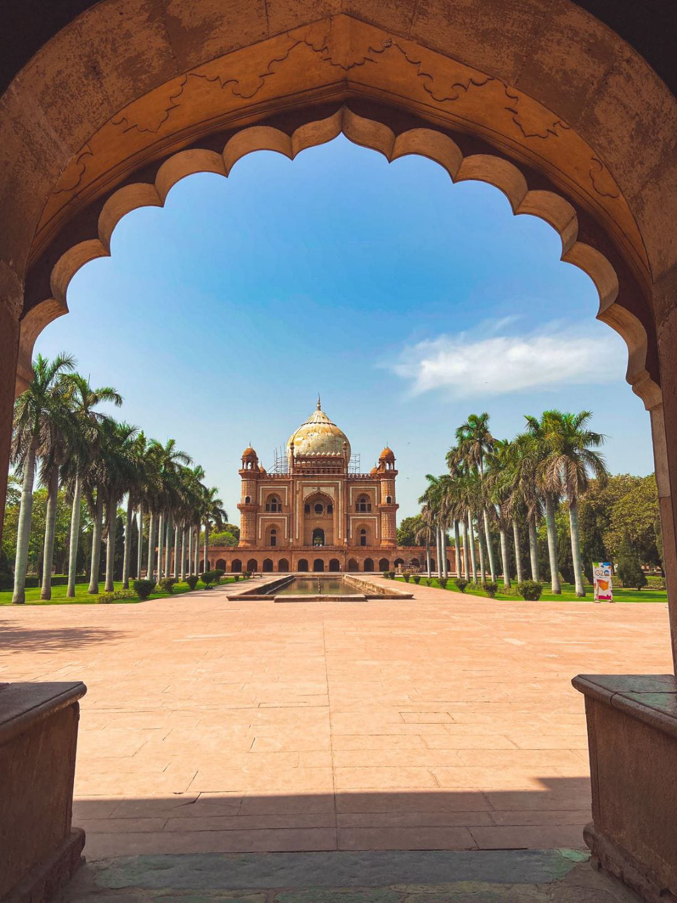

- 
Safdarjung Tomb
In Delhi, India, there is a marble and sandstone monument known as Safdarjung's tomb. For Nawab Safdarjung, it was constructed in the late Mughal Empire style in 1754. The monument's domed and arched red, brown, and white colored structures give it an air of spaciousness and powerful presence. When Ahmed Shah Bahadur took the throne in 1748, Safdarjung, the Nawab of Oudh, was appointed prime minister of the Mughal Empire (Wazir ul-Mamlak-i-Hindustan).
The tomb is situated within a garden and is designed in a late Mughal imperial style, similar to the Taj Mahal. It has four sections to its exterior garden and eight rooms surrounding the main chamber beneath the dome, or "eight paradises" (hasht bihisht). This marked a significant decline in the emperors' authority by the time they constructed their own tomb and garden complex, as it was the first time that someone other than the immediate imperial Mughal family had done it.
The final major burial garden of the Mughals, the Safdarjung tomb, was designed and constructed in the style of the Humayun tomb, resembling an enclosed garden tomb. 1754 saw its completion.The tomb was built using slabs taken from the grave of Abdul Rahim Khankhana.The tomb's four main elements are the five-part façade, the ninefold floor plan, the Char Bagh design with the mausoleum at its center, and a sizable platform with a secret stairway.The tomb's main entry gate is two stories tall, with an intricate façade painted in an extravagant purple color and decorated with plastered surfaces. The surface bears an inscription in Arabic that translates to "May the hero of plain bravery become a resident of god's paradise when he departs from the transitory." The library and other rooms are located on the façade's back side, which is visible after passing through the gate. The mosque is a three-domed building with stripes to the right of the gate.
- The Char Bagh plan with the mausoleum at the center, a ninefold floor plan, a five-part façade and a large podium with a hidden stairway.
- Dome: The tomb's dome is surrounded by four smaller domes and four minarets.
- Ninefold floor plan: The tomb has a nine-fold floor plan.